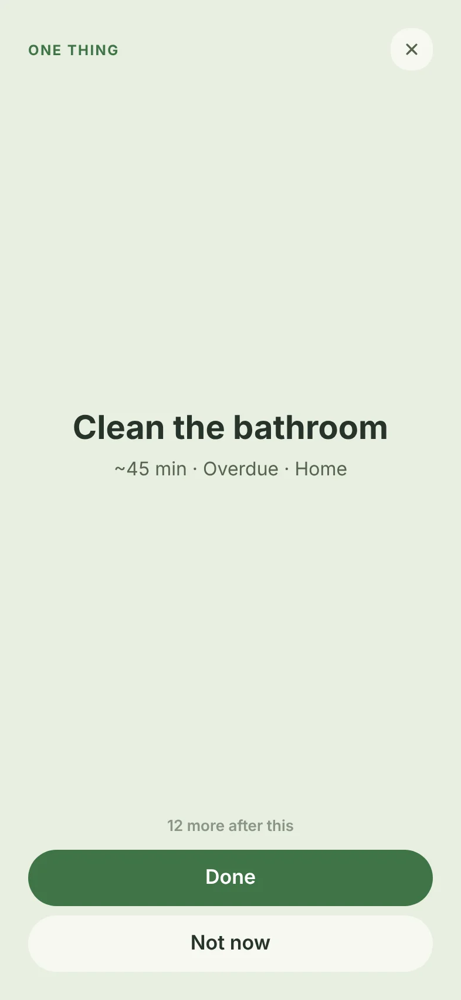
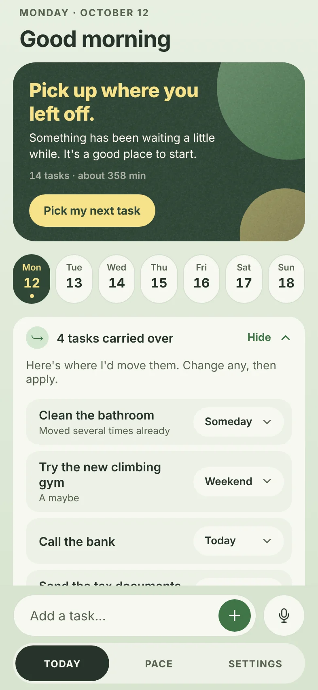

Can't decide? It picks for you.
Tap Pick my next task. Decide for me shows one task: a quick win while there is one, then whatever matters most. Done logs how long it took and offers the next.
Fit my time asks how much time and energy you have, and lists the tasks that fit back to back.

Say everything at once.
Tap the microphone and type or dictate whatever is on your mind, in English, Italian, Turkish or a mix. PaceTasks shows the tasks it understood before anything is added.
Unfinished tasks find a new day.
Yesterday's leftovers don't pile up. One row on Today proposes where each should go: today, tomorrow, the weekend or someday. Change any of them, then apply.
When tasks have waited too long, Weekly Reset walks you through them one at a time.

Compete only with your own pace.
Streaks, minutes, a 13-week heatmap and how close your estimates come to reality. After ten finished tasks, My Pace tells you in plain sentences when you get the most done.